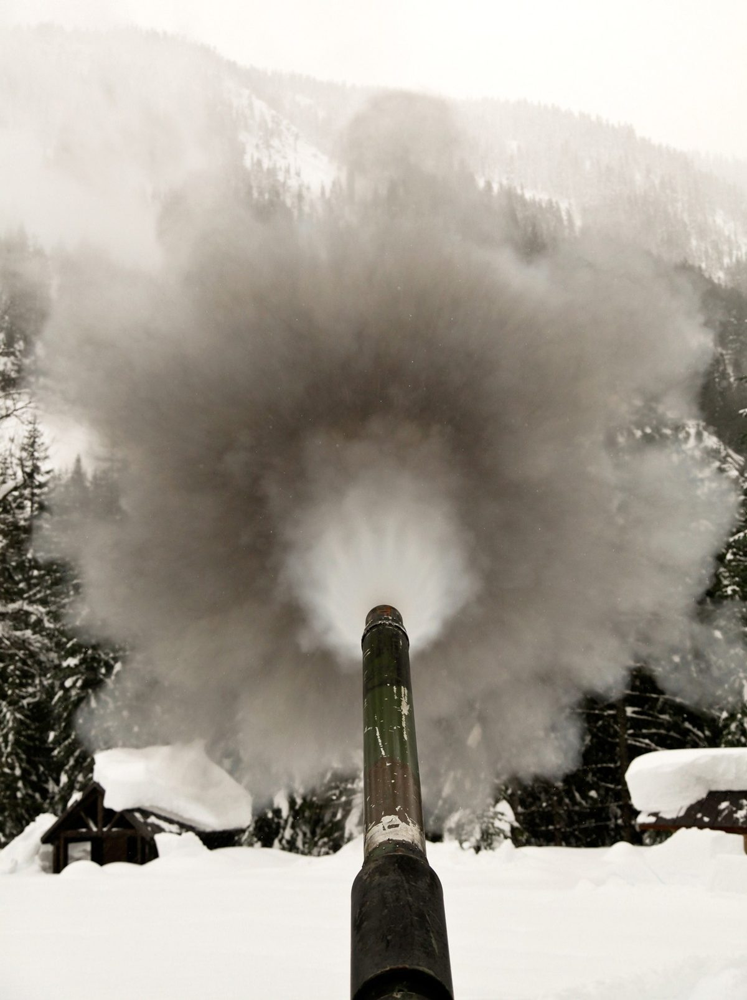
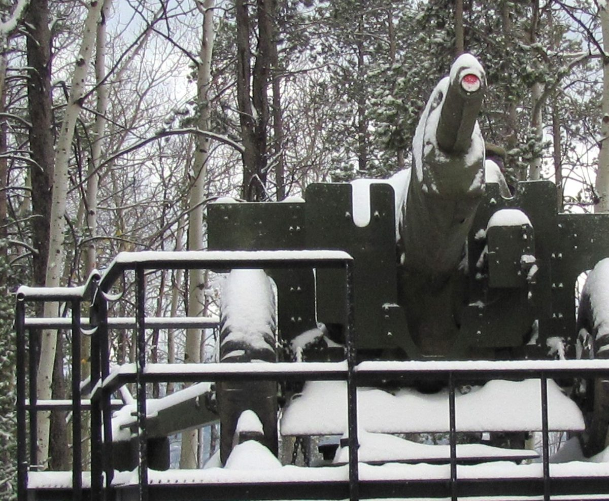
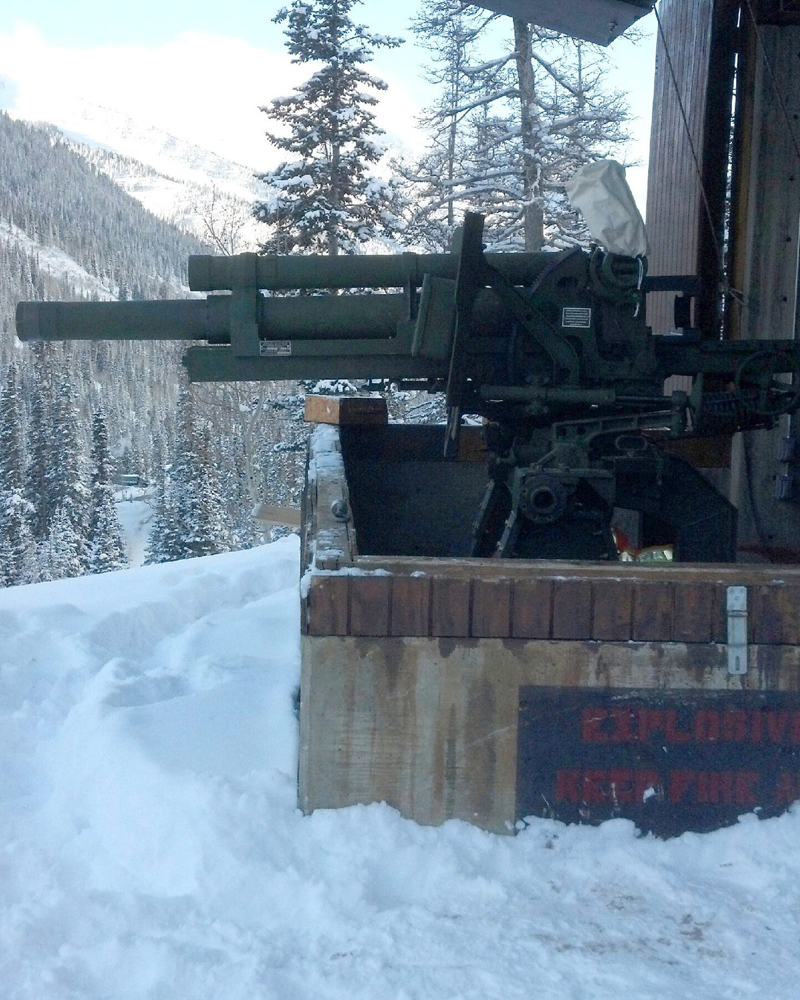

Snow safety
Ski Resorts Have Been Firing Army Guns at the Snow for 75 Years. The Guns Are Going Back.
For more than 75 years, ski resorts out West have opened fire on their own mountains before the first chair. The guns belong to the Army, and the Army wants them back.
By GoSki ·

Get to some Western ski areas early on a storm morning and you might hear it before you see anything: a deep boom, then another. Nobody is under attack. Ski patrol is shooting at the snow.
The target is the snow itself. A storm can pile fresh snow onto a steep slope until it is ready to slide. So, before anyone is allowed on it, crews hit the slope with explosives and bring the avalanche down on purpose, while the runs below are still closed.
How a shot makes a slope safe
The guns sit on fixed platforms, anywhere from three quarters of a mile to six miles from what they aim at. The targets are the starting zones: the high, steep spots where avalanches break loose. The blast shakes the loaded snow loose, and tons of it slide while nobody is there.
The idea is to set off smaller slides on your own schedule so a bigger one doesn't catch skiers or a road later. The Army says its program starts a slide about 95 percent of the time.
It started at Alta in 1949
Monty Atwater, the first snow ranger at Alta in Utah's Little Cottonwood Canyon, had served in World War II with the Army's 10th Mountain Division. In March 1949 he got the Utah National Guard to fire a 75 mm French howitzer at the slopes above Alta. Fifteen shots from the highway set off five slides. It was the first time military artillery was used for avalanche control in the United States.
More than 20 ski areas adopted Alta's methods, and the Army began lending guns to them and to highway departments.

The guns are on loan from the Army
The workhorse is the M101A1, a 105 mm howitzer. Each round is more than a foot long and weighs about 35 pounds. In 2016 the Army counted:
- 74 howitzers in use with another 38 in reserve at the Sierra Army Depot in California.
- 17 sites run by the Forest Service, the National Park Service, state highway departments and the Alaska Railroad.
- About 9,250 rounds fired that season.
The people pulling the lanyard aren't soldiers. They are ski patrollers and highway crews, trained and certified by a civilian group, the Avalanche Artillery Users of North America Committee. At Alta, gunners started around 3 a.m. on storm days and were at the gun by about 5.
Why the Army wants them back
The Army owns the guns, and it has asked the groups that use them to plan for giving them back. Its concerns, reported by the Deseret News in December 2025: the guns are old, they use a fuse that is no longer made, and fewer and fewer people know how to run and maintain them. Most of the howitzers were already close to 60 years old in 2020.
It isn't the first time. In 2004 the Army told Mammoth Mountain and Alpine Meadows (now part of Palisades Tahoe) to return five howitzers it had lent them, because it needed the guns for Iraq and Afghanistan.
Alta fired its last howitzer missions in the 2022–23 season, a 903-inch winter. Over about 75 years it had fired some 33,000 rounds. Its avalanche program director told The Salt Lake Tribune, "There are safer, more effective methods now."
Next door, Snowbird has fired Army howitzers since 1971. It still had one in 2025, and it plans to retire it by 2030.

What replaces a cannon
Most of the replacements sit right on the mountain and are fired by remote control, in any weather, without shooting over anyone's head.
- Wyssen towers A box on top of a tower drops a charge on a cable, which hangs it just above the snow before it goes off. Snowbird already has 21 of them.
- Gazex and O'Bellx They fill with propane and oxygen and ignite it, sending a pressure wave down into the snow.
- Avalaunchers A launcher that uses compressed gas to throw an explosive into a starting zone. Less range and punch than a howitzer, but mobile.
The catch is coverage. A single highway gun in Little Cottonwood Canyon reaches more than 50 avalanche paths along 14 miles of road. Utah's highway avalanche manager said it would take well over 60 remote devices to replace that one gun. Utah's highway department still has three howitzers working.
The shells that don't go off
Almost all of them explode. The few that don't can stay hidden in the snow until summer, so crews log every shot to know where to look for one that didn't fire.
- Yellowstone, June 2023 An unexploded 105 mm avalanche round worked its way down a mountainside to within 10 feet of the park's main road. Its fuse had been sheared off on impact. An Air Force bomb squad blew it up beside the road the next day. In 50 years of the park's avalanche program, only 12 rounds have reportedly failed.
- Crested Butte, September 2018 A guest climbing Sunset Ridge found an unexploded Avalauncher round. Patrollers and a state explosives expert roped in to make it safe.
- Colorado highways, 2019 Of about 1,500 charges the state used that winter, 22 didn't go off.
If you ever find a brightly colored, torpedo-shaped object on a mountain in summer, don't touch it or move it. Keep your distance and call ski patrol or local police.
The GoSki app
See what GoSki does
Tap a feature to see real screens from the app.
Every trail and lift on real 3D terrain. Spin, tilt and zoom to see how steep a run is before you ride it.


The Ski Tracker follows your day: vertical, speed, distance and time, with every run drawn on the resort map and matched to the trails you skied.


Conditions on the 3D map: where the wind is strongest, which slopes are in the sun, where the wind piles powder or blows slopes bare, and how deep the snow is.


Snow, rain, temperature and wind for the days ahead at every resort, and a map of where the next storm's snow will fall. Source: NOAA.


Some features require GoSki PRO.
Sources
- U.S. Army (2017): Army program mitigates avalanche threat in Western states (photos: U.S. Army)
- Deseret News (2025): Utah's avalanche guns are going silent
- The Salt Lake Tribune (April 2023): The Army is taking back the howitzers Alta, Snowbird use to fight avalanches
- The Salt Lake Tribune (November 2023): Alta Ski Area retires its howitzers
- Ski Utah: Last Gunners, the conclusion of Alta Ski Area's avalanche artillery program
- Central Wasatch Commission: A history of avalanche mitigation in the Cottonwood Canyons
- Scientific American (2020): Explosive charges protect roads and ski areas
- Associated Press via NBC News (2004): Army tells ski resorts to give artillery back
- U.S. Air Force via DVIDS (2023): EOD diffuses explosive situation at Yellowstone National Park
- Crested Butte News (2018): Undetonated explosive charge found at CBMR
- GearJunkie (2019): Watch out for bombs on Colorado trails, DoT warns
GoSki Stories are free to read and supported by ads. Ads and cookies